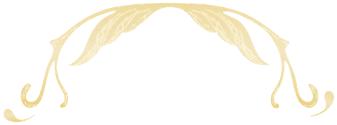

01
Conversamos sobre tu idea
Escríbenos por WhatsApp: una foto de referencia, la ocasión, una fecha especial. Te escuchamos y te orientamos sin compromiso.
Por WhatsApp · atención 24 hDiseñamos contigo una pieza única: eliges la piedra, el metal y cada detalle. Te acompañamos desde el primer boceto hasta que llega a tus manos.

Cuatro pasos, sin prisa y contigo en cada decisión. Antes de empezar confirmamos precio y tiempo de taller.
Escríbenos por WhatsApp: una foto de referencia, la ocasión, una fecha especial. Te escuchamos y te orientamos sin compromiso.
Por WhatsApp · atención 24 h
Te mostramos opciones reales de piedras y metales para que elijas con calma la combinación que te representa.
Asesoría personalizada
Recibes el diseño de tu pieza y la cotización final. Solo pasamos al taller cuando estés completamente feliz con él.
Tú apruebas cada detalle
Nuestros orfebres la elaboran a mano. Te la entregamos en Armenia con cita, o la enviamos a cualquier ciudad de Colombia.
Envío gratis en Colombia
“Cada pieza existe una sola vez.”Empezar mi pieza por WhatsApp
¿Tienes otra duda? Escríbenos, respondemos a cualquier hora.
El precio depende de la piedra, el metal y el trabajo de taller. Conversaremos contigo antes de cotizar.
Confirmamos el tiempo de taller y entrega antes de comenzar. Cuéntanos si tienes una fecha especial.
Consulta la política de devoluciones publicada y confirma las condiciones de tu encargo con nuestro equipo.
Consulta con nuestro equipo la disponibilidad y las condiciones del certificado de autenticidad.